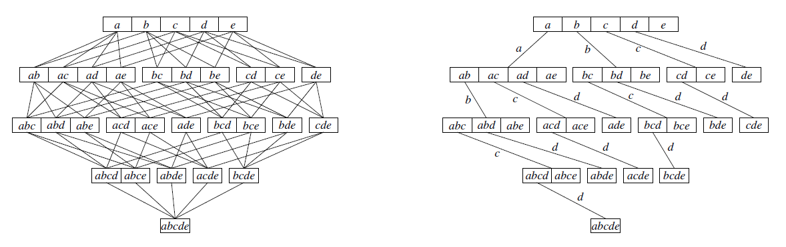

3 Métodos de asociación
Encontrar patrones en un dataset
- La regla de asociación se utiliza para descubrir patrones y relaciones ocultas en conjuntos de datos.
- La regla de asociación se basa en la teoría de probabilidad y estadística, y se utiliza para identificar la probabilidad de que un elemento esté asociado con otro elemento en un conjunto de datos.
- Los métodos de asociación son útiles para identificar patrones de comportamiento y preferencias de los clientes, lo que puede ayudar a las empresas a tomar decisiones de marketing y ventas más informadas.
- Los métodos de asociación pueden ayudar a predecir qué productos o servicios son más propensos a ser comprados juntos, lo que puede ayudar a los minoristas a mejorar su eficiencia de inventario y aumentar las ventas.
- Los métodos de asociación también se utilizan en la minería de datos, la inteligencia empresarial y la investigación de mercado para identificar patrones y tendencias en grandes conjuntos de datos.
\[\{Pan, tomate, cebolla\} \Rightarrow \{ \text{Carne para hamburguesa}\}\]
3.1 Dataset
POS: point-of-sale. Puntos de venta
- Supermercados
- Librerías
- Tráfico web
- Minería de texto RRSS
La base de datos para este tipo de métodos esta basado en una colección de transacciones, una transacción la vamos a denotar como:
\[T_i=\{I_1,I_2,I_3, \ldots \}\]
Normalmente estas bases de datos se las puede expresar como una base de datos de 0 y 1. Donde el número de filas es cantidad de transacciones y el número de columnas es el total de item/productos.
Algunos ejemplos:
- A partir de la siguientes 3 transacciones, genere una base de datos
- {leche, huevo, pan, chocolate}
- {harina, leche, tomate}
- {pan, huevo, soda, pescado}
3.2 Fundamentos
- Soporte: El soporte de un conjunto de elementos es la proporción de transacciones en las que aparece ese conjunto. Un conjunto con un alto soporte indica que es común en el conjunto de datos.
\[supp(X)=\text{Proporción de X en el dataset}\]
- Confianza: La confianza mide la probabilidad de que un elemento de un conjunto aparezca en una transacción dado que otro elemento del mismo conjunto también aparece en esa transacción. Una alta confianza indica que los elementos del conjunto están fuertemente asociados. Mientras mas cercano a \(1\) sea la confianza, mas fuerte es la regla de asociación
\[P(X \Rightarrow Y)=\frac{supp(X\cup Y)}{supp(X)}=P(Y/X)=\frac{P(YX)}{P(X)}\]
- Elevación: La elevación mide la fuerza de la relación entre dos conjuntos de elementos, teniendo en cuenta la frecuencia de cada conjunto por separado. Una elevación mayor que 1 indica que los elementos del conjunto están más asociados de lo que se esperaría por casualidad.
\[lift(X \Rightarrow Y)=\frac{supp(X \cup Y)}{supp(X)*supp(Y)}=\frac{P(XY)}{P(X)P(Y)}\]
- Frecuencia de itemsets: La frecuencia de itemsets se refiere a la cantidad de veces que aparece un conjunto de elementos en el conjunto de datos. Este concepto es importante porque los algoritmos de asociación utilizan la frecuencia para identificar los patrones de asociación.
- Conjunto de datos: El conjunto de datos es el conjunto de transacciones que se utilizan para el análisis de asociación. Es importante seleccionar un conjunto de datos representativo y de alta calidad para obtener resultados precisos. Cuando el dataset es extremadamente grande (RAM es es superado) se recomienda tomar una muestra aleatoria.
- Regla de asociación: Una regla de asociación es una relación entre dos o más elementos de un conjunto de datos. La regla se expresa en forma de “si-entonces” y muestra la probabilidad de que un elemento se asocie con otro.
\[LHS \Rightarrow RHS\]
Pregunta: En una bolsa de mercado (dataset) con 4 item/elementos, ¿cuántas posibles reglas de asociación existiran?
{A,B,C,D}
- Algoritmos de asociación: Los algoritmos de asociación son técnicas utilizadas para descubrir patrones y relaciones ocultas en los conjuntos de datos. Los algoritmos más comunes son Apriori, Eclat y FP-Growth.
\[\alpha \Rightarrow \beta\]
3.2.1 Ejercicio
Dada las siguientes transacciones en una farmacia:
- {vitaminas, antigripal, paracetamol}
- {ibuprofeno, complejoB, aspirina}
- {complejoB, vitaminas}
- {antigripal, paracetamol, aspirina}
- {jarabe para la tos, vitaminas}
Encontrar los soportes de LHS, RHS y conjunto, confianza y elevación de las siguientes reglas de asociación
\[\{antigripal\}\Rightarrow\{paracetamol\}\] \[supp(antigripal)=\frac{2}{5}\quad supp(paracetamol)=\frac{2}{5}\] \[supp(paracetamol,antigripal)=\frac{2}{5}\]
\[conf(antigripal\Rightarrow paracetamol)=\frac{supp(anti,para)}{supp(anti)}=1\]
\[lift=\frac{conf}{supp_R}=\frac{1}{\frac{2}{5}}=2.5\]
\[\{antigripal,paracetamol\}\Rightarrow\{complejoB\}\]
3.3 Pasos
- Preprocesamiento de datos: En esta etapa, se preparan los datos para el análisis de asociación. Esto incluye la eliminación de datos faltantes, la transformación de los datos categóricos a numéricos y la eliminación de datos redundantes. Se recomienda armar la dataset en cualquiera de los tres formatos: + Lista + Matriz + Base de datos (data frame)
- Selección de los parámetros: Se deben seleccionar los parámetros adecuados para el algoritmo de asociación, como el soporte mínimo y la confianza mínima, que controlan la calidad de las reglas descubiertas.
- Ejecución del algoritmo: Se aplica el algoritmo de asociación seleccionado para buscar reglas de asociación en el conjunto de datos. Los algoritmos comunes incluyen Apriori, FP-Growth y Eclat.
- Generación de reglas de asociación: Se generan las reglas de asociación, que indican la relación entre los elementos en el conjunto de datos. Se pueden generar reglas de asociación en base al soporte, la confianza, la elevación o cualquier combinación de estos criterios.
- Evaluación y validación de las reglas: Las reglas de asociación generadas deben evaluarse y validar para determinar su utilidad y relevancia en el contexto de la aplicación específica. Esto puede incluir la evaluación de la calidad de las reglas en términos de precisión y relevancia, así como la interpretación de las reglas para identificar patrones y relaciones significativos.
- Interpretación y uso de las reglas: Finalmente, las reglas de asociación pueden ser interpretadas y utilizadas para tomar decisiones de negocios informadas y para identificar oportunidades para mejorar la eficiencia y la eficacia de las operaciones empresariales.
3.4 Algoritmo Apriori
El algoritmo Apriori se basa en la idea de que si un conjunto de elementos aparece con suficiente frecuencia en un conjunto de datos, entonces es probable que estén relacionados entre sí.
Los parámetros del algoritmo apriori son:
- Soporte mínimo (obligatorio): Contribuye a la reducción de la bolsa de items
- Confianza (opcional): Ayuda a reducir la cantidad de reglas de asociación encontradas con base al soporte mínimo
Pasos:
- Seleccionar un umbral mínimo de soporte: Este umbral se utiliza para determinar qué conjuntos de elementos se consideran frecuentes. Los conjuntos que aparecen con frecuencia igual o superior al umbral mínimo de soporte se denominan conjuntos frecuentes.
- Generar conjuntos de candidatos: En este paso, se crean conjuntos de elementos candidatos utilizando los conjuntos frecuentes encontrados en el paso anterior.
- Calcular la frecuencia de los conjuntos candidatos: En este paso, se cuentan las ocurrencias de los conjuntos de elementos candidatos en el conjunto de datos actual.
- Eliminar conjuntos candidatos que no cumplen con el umbral de soporte mínimo: En este paso, se eliminan los conjuntos candidatos que no aparecen con la frecuencia mínima especificada en el paso 1.
- Repetir los pasos 2 a 4 hasta que no se puedan generar más conjuntos candidatos o todos los conjuntos candidatos restantes satisfagan el umbral de soporte mínimo.
- Se utiliza los conjuntos de candidatos que cumplen el soporte mínimo y se generan las reglas de asociación con base a las diferentes combinaciones de los conjuntos de candidatos.
- (opcional) Se eliminan las reglas de asociación que no cumplan con la confianza establecida.
Ejemplo:
- Compra 1: ABCD
- Compra 2: ACD
- Compra 3: BCD
- Compra 4: AD
- Compra 5: ACD
A partir de algún item
3.5 Algoritmo ECLAT
En términos de resultados, este algoritmo logra exactamente el mismo conjunto de items que algoritmo apriori, este tiene dos principales diferencias:
- Su enfoque no es encontrar reglas de asociación, se enfoca en encontrar los conjuntos de items más frecuentes.
- El ECLAT es más rápido en su procesamiento debido a que la manera en que busca los conjunto de items frecuentes sigue un criterio vertical.
El algoritmo tiene un parámetro obligatorio y otro opcional:
- Soporte mínimo (obligatorio)
- Cantidad de items de inicio (opcional, por defecto es 1)
Pasos:
- Se selecciona a los conjuntos de items que cumplan el parámetro de cantidad de items, si este no asigno el valor es 1.
- Se calcula el soporte de estos conjuntos de items, se identifica el conjunto con el mayor soporte como punto de partida. Se omiten los conjuntos que no cumplan el soporte mínimo.
- A partir del punto de referencia (partida) se calculan las conjuntos de items adicionando un item (+1) que contenga al conjunto de item de partida.
- Se vuelve al paso 2 hasta que no existan mas conjuntos de items que cumplan el soporte mínimo. Cuando pase esto se salta al siguiente conjunto de items del inicio.
